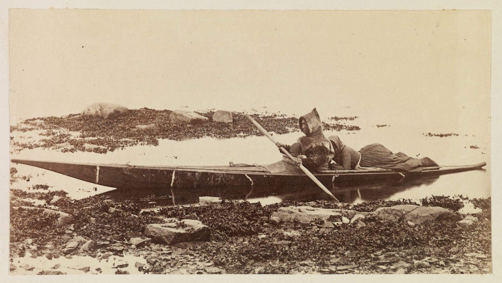
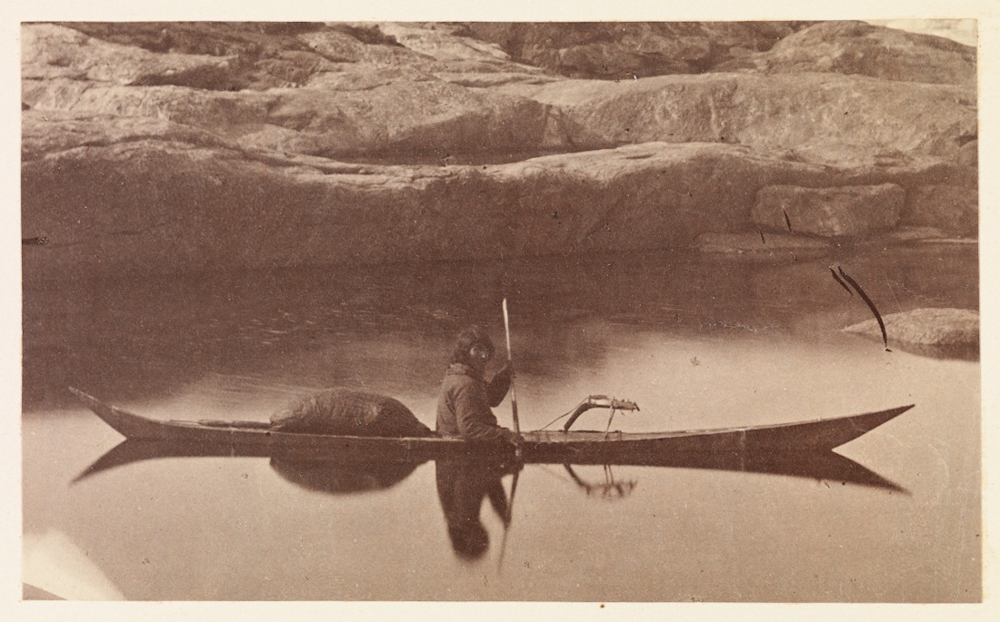

After a chapter on Greenland’s medieval history illustrated by ten images of icebergs and rocky headlands, the first image of human settlement in The Arctic Regions appears at the beginning of the second chapter: A View of Julianeshaab, or “Julian’s Hope,” a protected harbor that became southern Greenland’s largest settlement. Looking down from a rising hill of scrabbled granite, the photograph shows a meagre assembly of simple wooden homes with sharp, high peaks nestled in the rocky landscape. These structures mark a significant change in the aesthetic cadence of the book. A landscape first characterized by strange and inhospitable forms now revealed pockets of inhabitation.
These European-style buildings also establish the dominant culture of Julianeshaab. One home facing the narrow channel of water back to the right of the image is marked by a Danish flag, blurred in the wind during the camera’s long exposure. After centuries of control by Christian kings and missionaries from Scandinavia, Greenland became an official colony of Denmark in 1814. Employees of the Danish government were subsequently expected to serve ten-year terms of service in Greenland. As Danes stayed on to make homes and families in Inuit land, their different cultures underwent the complex process of hybridization, mixing genes and ways of life.
Bradford, a Quaker, highlighted the signs of Christianity that represented what his viewers would have praised as the civilizing power of American and European cultures. He waxed poetic when “… the sun broke suddenly upon our sight through a gorge in the Eastern hills [and] his rays fell on the tower of a modest little church…” But he was also attentive to, and often quite respectful for a man of his nationality and standing toward the Inuit and their ways of life. He noted, for example, how the settlement’s Inspector, a Danish gentleman, preferred the sealskin garments of his adoptive home.
The Panther’s crew and the people of Julianeshaab experienced a mutual fascination. Bradford recalls endless questions about the purpose of his trip, though gives no sign what the artistic pretense of the expedition meant to his new acquaintances. For his part, Bradford described at length the indigenous methods of construction and their use of kayaks, skin boats that native men used for travel and hunting.

Kayaks had long been a point of fascination for Arctic enthusiasts in America and Europe, but had rarely been seen in photographs at the time of this journey. George Simpson McTavish, a Hudson’s Bay Company Trader, had made glass plate negatives of several of these seacraft while stationed at Little Whale River in Quebec in 1865. Two years later, at the World’s Fair (Exposition Universelle) in Paris, Denmark sent a number of photographs of Greenlanders, examples of their tools and clothes, and two models of their “canoes.” But the images from The Arctic Regions represent some of the earliest by professional photographers, and the quality of these scenes, though somewhat woodenly posed, is noteworthy. Several photographs show locals posing for the camera, including a husband and his wife riding low in a kayak at the water’s edge. Another image captures the twinned image of a man and his craft, the slice of its reflection softened by the flat but slow moving water.

Admiration for the kayak, particularly for the sophistication and elegance of their construction, demonstrated a western respect for indigenous material culture and its enduring usefulness in the sub-arctic environment. Images like these thus may have helped to unsettle commonly-held views of “Esquimaux” as a primitive and thus inferior race.